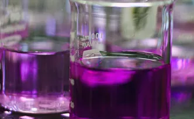

27/04/2021
Realizzare una soluzione diluendo una soluzione madre (molto concentrata) con un solvente per ottenere la molarità desideratà
Nell'immagine a lato, possiamo osservare la soluzione madre: permanganato di potassio (KMnO4)
La soluzione è una miscela omogenea in cui una o più sostanze sono contenute in una fase liquida o solida o gassosa; contiene particelle diverse mescolate e distribuite in modo uniforme nello spazio disponibile in modo che ogni volume di soluzione abbia la medesima composizione degli altri.
La molarità è concentrazione di una soluzione espressa dal numero di moli di soluto disciolte in un litro di soluzione (simbolo M ).
La mole è l'unità di misura della quantità di sostanza.
La diluizione è l'perazione per cui a una sostanza viene aggiunto un liquido per diminuirne la concentrazione.
Inizialmente ho elaborato i dati calcolando la massa della soluzione madre da versare nel cilindro con l'acqua, poi ho eseguito una proporzione per trovare il volume della soluzione appena citata. Infine ho messo in pratica i miei calcoli:
Dopo essermi munito degli strumenti necessari, è stata prelevata una quantità nota dal cilindro contenente la soluzione madre con la propippetta ed è stata versata nel cilindro contenente una quantità parziale del volume dell'acqua, dopo aver mescolato con una bacchetta in vetro la soluzione è stata portata a volume.
Solvente: acqua distillata
Soluto: permanganato di potassio (KMnO4)
V1 = ?
M1 = 0,01mol/L
V2 = 0,02L
M2 = 1 · 10-4mol/L
Mm = 158,04
m1 = 0,24g
Partendo da:
n1 = n2
E sapendo che:
n1 = M1 · V1; n2 = M2 · V2;
Si può scrivere anche:
M1 · V1 = M2 · V2
Si può scrivere anche:
M1 · V1 = M2 · V2
Quindi per trovare V1 bisogna svolgere la proporzione:
V1= (M2 · V2) ⁄ M1
Sostituisco le lettere con i valori e calcolo il risultato.
L'esperimento può essere considerato riuscito in quanto, paragonando le diverse soluzionioni create in laboratrio, le colorazioni sono pressocchè identiche